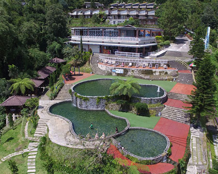
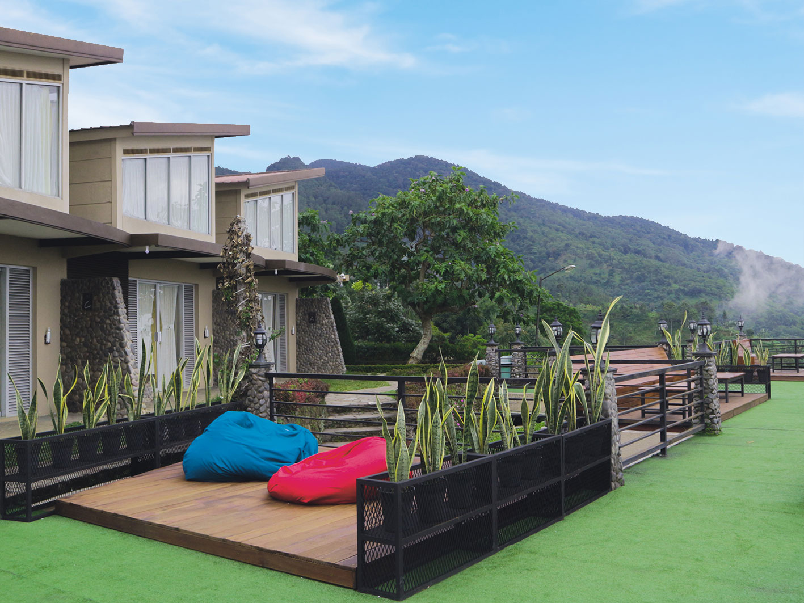
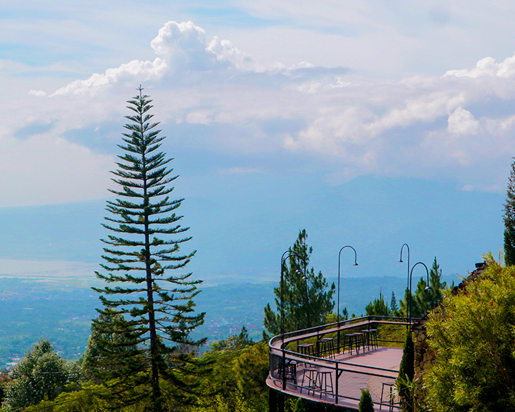

Pernahkah kamu membayangkan dapat berenang diatas awan? Pastinya sangat menyenangkan jika kita bisa berenang dengan pemandangan awan dan birunya langit yang menyejukkan mata. Kamu wajib tahu, ada wisata alam dengan panorama exotic bernama Umbul Sidomukti. Wisata alam yang satu ini terletak di Kota Semarang. Semarang terkenal memiliki wisata yang kebanyakan adalah wisata-wisata yang bersejarah, seperti lawang sewu, kota tua dan lain sebagainya. Namun siapa sangka kota yang juga dijuluki Kota Atlas ini juga menyimpan wisata panorama alam yang exotic yang memanjakan matamu ketika berkunjung. Indahnya pemandangan di wisata yang satu ini dapat menyejukkan hati, dan pastinya instagramable. Recommended bagi kamu yang ingin menenangkan pikiran dari padatnya Kota Semarang atau hanya sekedar ingin berfoto dengan latar alam yang exotic.
Taman Renang Alam merupakan salah satu daya tarik yang ada dikawasan wisata ini. Umbul Sidomukti memiliki tiga kolam renang bertingkat dengan kedalaman yang beragam. Untuk, kolam dewasa tersedia dengan kedalaman 1.3m - 1.6m, sedangkan anak-anak tersedia kolam dengan kedalaman 30 cm. Air yang digunakan berasal dari mata air pegunungan yang alami, sehingga tampak jernih dan menyegarkan. Belum lagi posisi kolam yang langsung menghadap punggung Gunung Ungaran yang menyajikan pemandangan hijau dan didepannya disajikan pemandangan Kabupaten Semarang. Sangat indah bukan.
Wisata alam ini memiiki fasilitas-fasilitas umum yang menunjang kebutuhan pribadimu, jadi kamu tidak perlu khawatir berlama-lama di wisata ini. Diantaranya adalah Lahan Parkir, tempat parkir cukup luas terbagi dua sesuai area tujuan wisata. Toilet dan kamar mandinya cukup bersih. Begitu pula dengan musholla dan area wudhunya. Berlibur disini memang dijamin tingkat kenyamanan dan keamanannya. Apalagi, air yang ada disini hampir setiap waktu berganti karena, langsung keluar dari mata air. Wisata Umbul Sidomukti tak hanya menyajikan kolam dengan panorama exotic. Namun juga menyajikan banyak spot yang dapat menjadi daya tarik tersendiri.
Menikmati kopi di Pondok Kopi Umbul Sidomukti Semarang. Nikmatnya minum kopi ditemani panorama alam yang indah dari ketinggian. Di kawasan ini terdapat beberapa café yang menawarkan pemandangan alam mempesona. Kamu dapat bersantai sambil menyantap aneka menu hidangan istimewa. Salah satu café yang terkenal di kawasan wisata ini adalah Pondok Kopi. Kamu dapat merasakan nikmatnya minum kopi ditemani panorama alam yang sangat indah. Menu kopi yang tersedia pun beragam, seperti espresso based coffee, black coffee, manual brew, dan traditional coffee. Tempat yang juga menjadi spot menarik ini terletak sekitar 700 meter dari sarea kolam renang, tepatnya di dekat penginapan. Selain memandangi indahnya perbukitan, kamu juga dapat merasakan sejuknya udara kawasan pegunungan dari tempat ini.